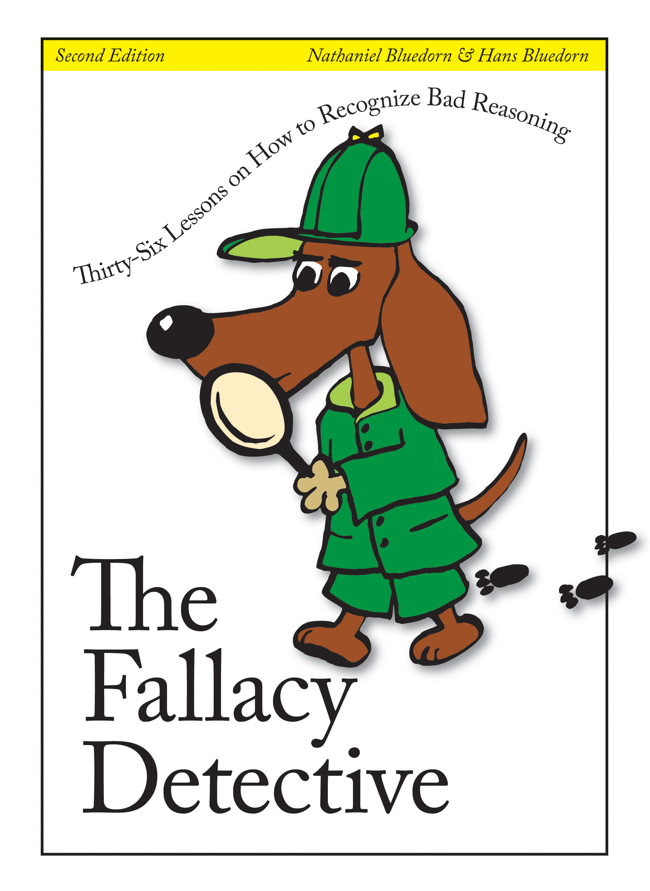

Certainly economists revel in their role as scolds of commonsense fallacy. As John Hewson is quoted as saying in Christine Wallace's biography of him when he was Leader of the Liberal Party "As soon as you get an equilibrium approach to life, suddenly you realise that a lot of what you'd thought was wrong". Everyone knows that trade restrictions create jobs. It's a complicated subject of course, but most economists don't think it does, or if it does, it does so at the cost of living standards and there are much better ways to create jobs. And, generally they're right.
Still, you can be right in puncturing a common fallacy and still be wrong. This was Keynes case in the General Theory.
you can build a system out of some refutation of the the public's commonsense, which, even though the refutation is correct, is still wrong. In a favourite passage of mine he reflects on mercantilism which his new theory had drawn him back to:
The mercantilists perceived the existence of the problem [of overcapacity and depression in an economy] without being able to push their analysis to the point of solving it. But the classical school ignored the problem, as a consequence of introducing into their premises conditions which involved its non-existence; with the result of creating a cleavage between the conclusions of economic theory and those of common sense. The extraordinary achievement of the classical theory was to overcome the beliefs of the “natural man” and, at the same time, to be wrong.
There are other examples of the same phenomenon. Thomas Malthus in the late 18th century and Garrett Hardin in the 1960s spoke mounted very simple and powerful arguments focused on the way population growth would overwhelm productivity keeping most people in (Malthus) returning most people to (Hardin) penury. They might be proven right after all. But the world defied their prophecies in the half century following their articulation. Malthus is surely the unluckiest social scientist there’s been, arriving at a great insight into the force that had held the bulk of humanity at near subsistence for the whole of human history … just as it as being overcome. Living standards took off and today stand at around twenty times what they were when Malthus published. Hardin’s tragedy of the commons became a mainstay in numerous disciplines. It’s part of economists’ commonsense today. Yet Hardin offered his prophecies without the slightest curiosity in how the things he spoke about had played out in the world. While Hardin’s trenchant conclusion was that commons should either be privatised or subjected to management by central government, numerous communities in countries rich and poor had evolved productive ways to manage the commons without recourse to either expedient. All this while backing policies like restricting welfare benefits and an end to "unqualified reproductive rights". And it turned out that, as we got richer, fertility plummeted. For the last few decades the idea has grown in the public mind that we’re running out of resources. Everyone knows that we're running out of resources. Surely growth like this can't go on the way it's going. Yet markets provide a pretty satisfactory way of responding at least in the medium term. As prices rise for increasingly scarce resources, human ingenuity is unleashed over a wide front, with users economising and seeking ways to substitute away from the scarcest resources. As a consequence of the counter-intuitive power of this argument, many economists like Julian Simon and Milton Friedman styled themselves as the scourge of the commonsense notion that endless growth must end disastrously. Their arguments were appropriate in their domain. And yet, at the same time, they were wrong. As we’re now observing, however effective the market might be at dealing with resource scarcity, it cannot on its own deal with excess superfluity. We are slowly poisoning our planet by making it a sink for our waste.Analogously, however much I might be succeed in overcoming the general public’s commonsense that the economic free-rider problems unleashed by internet sharing are dwarfed by the opportunities to which it gives rise, man does not live by bread alone. In a quite different domain, the ease with which the internet enables cultural sharing, has loomed as a truly existential threat to modern life with greater speed than anything else hitherto imaginable except an asteroid strike. The professionalisation of persuasion and ‘issues management’ in the mainstream media, and now the more dramatic weaponisation of the same in social media is powering profound transformations in our political culture.Isaiah Berlin made famous a distinction between two intellectual temperaments – the fox who knows many things and the hedgehog who knows one big thing. Malthus, Hardin, Friedman and Simon were hedgehogs. Keynes was a fox. The logic with which Malthus and Hardin saw the problem and impressed its importance on the world was both unimpeachable and powerful. And yet there was more than was dreamt of in their philosophy.Other examples are most welcome in comments.
a classic in this genre was Alfred Wegener's theory of continental drift due to the tides of the oceans. He challenged common sense belief that the landmasses are there where they have always been.
He was right, and yet, he was wrong. Yes, the earth moves, but not due to the forces he was thinking of.
What was interesting in his case is how unscientific the reactions of the scientists were, keeping his ideas out for more than a generation.
We do not inhabit a Galilean universe. Galileo, unlike Kepler, retained circular planetary orbits from the Copernican and Ptolemaic models. This stopped Galileo proposing a model of the solar system that actually works, and in the Dialogue on the Two Chief World Systems, Galileo's proof of heliocentrism is the tides, which he says are caused by the ocean and the land rotating at different velocities. Even in the sixteenth century, Galileo's critics pointed out that Galileo could explain a single tide every 24 hours in this way, but not the two tides that actually happen.
Kepler, in a spectacular display of mathematical reasoning, proposed his Three Laws, with elliptical orbits, that are still useful to us in understanding planetary motion and the structure of solar systems. Kepler actually went within an inch of discovering gravity three generations before Newton. He proposed a 'whirling-force' that emanates from the sun and holds the planets in stable orbits. The only difference between the whirling force and gravity is that Newton saw that gravity also emanates from the planets and influences the entire system.
Why then do we think we inhabit a Galilean universe rather than a Keplerian universe? Should Kepler have petitioned his employer, the Holy Roman Emperor Rudolph II for a trial before the inquisition to raise his ratings?
Thanks Guys, great additions.
BTW your Dad got his bon mot about rent control from Gunnar Myrdal - surprising as, to put it mildly, Myrdal was no fan of the free market.
I hate to be pedantic [actually that's a lie - you know I love pedantry], but a fallacy is not simply a mistake but an error in LOGIC, so the claim that trade restrictions create jobs is not strictly speaking a fallacy.
Alan, I don't know your background but my own experience is that a lot of people with strong science backgrounds think we live in a Keplerian universe. I think you're right that the power of story is important here, and lots of people (especially in the humanities, where it used to be popular) have only heard the Galileo story. I personally have a soft spot for Brahe, with his passion and genius for accurate measurement, which turned out to be exactly the thing that great science needs. The right data is hard to get - but once you've got it, the theory seems likely to follow eventually. But no-one says we live in a Braheian universe.
Paul, can I just chuck in a suggestion that reactions to Wegener were not horribly unscientific. Science worked the way it usually does, with all the human issues that science always has but often overcomes.
Wegener put the theory out there in 1912, complete with some errors. Evidence about the Earth’s crust was messy and scarce at the time (still is, really). A number of good objections were stated. As people looked at those objections, they weakened over time. Wegener’s theory was edited and improved.
And when the new pro-drift evidence showed up in the 1950s and 1960s, a lot of people changed their mind pretty quickly – not just died off, but actually rethought things. George Gaylord Simpson, a trenchant 1940s critic, even wrote an I-was-wrong autobiography called “Concessions to the Improbable”.
Scientific beliefs are webs. Before scientists will cut a piece of the web out and attach the new one, they want to see enough new attachment points, where the new idea connects with all the other things we reckon are true. So we often get a long period of rather confused discussion. It happened with Wegener, as it had happened with Copernicus (who could offer no good answer to the stellar parallax problem). That discussion period is a feature, not a bug.
Sometimes the scientific case is so good that the rethink happens very quickly. I am full of admiration for the way in which physicists decided they had all been wrong about the entire universe in just a few years after Einstein posited relativity. On the other hand, when you are studying a simple system, the evidence can point more clearly in one direction.
Hey Jacques, duplicate comment - can you delete?
Stellar parallax was not definitively observed until the nineteenth century, and the objections to Copernicus and Galileo were predominantly scientific rather than religious. Had Urban VIII, until 1633 widely regarded as a flaming radical, not suffered a rush of blood to the head we would probably recall Galileo as a fairly minor figure.
Until the sixteenth century the dominant set of astronomical tables were the Alfonsine Tables, compiled under the patronage of Alfonso X the Wise of Léon-Castile 1221-1284. A new set, the Albertine or Pruthenic (Prussian) Tables of 1551 based on Copernicus was compiled under the patronage of Albert I, Duke of Prussia. The Pruthenic Tables did not work as well as the older Alfonisine Tables.
What turned the table for heliocentrism was the Rudolphine Tables that Kepler compiled for the Holy Roman Emperor Rudolph II which worked far better than the the older sets because Kepler used elliptical orbits in his calculations. By 1700 the Rudolphine Tables and heliocentrism had carried the day.
Galileo was widely held something of a charlatan in his own lifetime. On one famous occasion the Venetian senate voted him a patent and a life pension for inventing the telescope. The senators were mightily peeved when they received a letter from the Prince of Orange reporting a demonstration of the telescope two years before Galileo claimed to have invented it.
Galileo's prominence dates from the second half of the nineteenth century when he became the star in a scientific soap opera where science came to a dead halt in the Catholic world because of the trial. Certain writers with disquieting rhetoric continue to put out the Galileo as heliocentric hero myth even to this day. Needless to say not only was Galileo not a central figure in the acceptance of heliocentrism but Catholic science rolled on quite happily after the trial.
Hi David,
I knew my little remark on the unscientific reaction to Wegener might lead to this sort of reply! Serves me right I guess.
However, I am not taking it back. Wegener was careful not to pose his observations as a fully fledged theory. He was primarily bringing his approach and his data to the fore (ie his methods for arguing where continents would have previously been and the implications of his current observations plus some speculation as to how the drift could have happened). A two generation delay in taking up the basic methods and data of Wegener is not exactly reasonable. The others scientists should have taken up his methods much sooner. And in those two generations his thoughts were actively kept out of the textbooks and debates, essentially till many of the critics with positions to lose had died. Science indeed progresses one funeral at a time.
There is a deeper issue here, connected to your little throw away line that the evidence on the earth's crust was patchy, which can be turned around: the pre-Wegener wisdom was based on very flimsy evidence too! Much flimsier indeed than Wegener's stories. The status quo was not well-established knowledge with a lot of evidence backing it, but rather gut-feeling disguised as science. To resist a new story for two generations in those circumstances is unscientific because it fails to openly recognise the weakness of the status quo.
To see pretty much exactly the same thing happening right now, just have a look at the dominant theories of unemployment and the business cycle in macro-economics in the top journals. The 20th century accepted wisdom that waves of unemployment are a mass holiday is still the dominant explanation that emerges from the textbooks taught right now.....neither the GFC nor the 1930s great recession, nor the Eastern European 1990s implosion, or even the Irish potato famine of the 19th century have managed to overturn that wisdom.... Is that a feature or a bug?
A phallacy?
I particularly like your point here about the way the science of the day overstated the reliability of its dominant theory. Being more explicit about the reliability of conclusions is something science still does relatively poorly. Doing it better would bring out some of the gaps between fields like physics at one end and, ahem, the social sciences at the other.
I would still be wary of depicting Wegener as a brave loner, though. He won a professorship in meteorology and geophysics at the age of 44, which tells you something about how much of an outsider he was in the scientific community. He had influential colleagues around the world who took up his ideas quite early (despite their obvious problems) and kept them alive after his early death until the new evidence appeared. Opposition to his idea was strongest in the US, so US-centric accounts now tend to play up the opposition he faced.
Like you, I think the Wegener story tells us something interesting about science. But one thing it tells us is that you often can't keep a good idea down for long if people stay open to new data.
Footnote: The Wegener story has always intrigued me, in part because the whole plate tectonics thing drove me nuts me as a kid. I could never get a clear picture of it. I realised later I had been reading a bunch of slightly dated science books written just as plate tectonics was emerging.
yep, all that. Wegener indeed was not a loner without support, but that makes the story worse, not better: even an insider with access to a platform who was careful about his claims couldn't get the field to move till well after his death. Imagine what happens to, say, a Russian writing in a Russian journal, or someone from Latin America. They'd be lucky to be credited centuries afterwards if they saw something the Anglo-sphere academics didn't want to take up.
Yeah, the tables are definitely a better example than stellar parallax.
Oddly enough, the Tychonic universe, where the Sun, Moon and stars orbit the Earth but the other planets orbit the Sun, not the Ptolemaic or Copernican models, was dominant in 1633.
I am sure most hard science people accept elliptical orbits. I am less sure they would necessarily call those orbits Keplerian or draw the conclusion that Kepler played a vastly more significant role than Galileo in the acceptance of heliocentrism.
Kepler is an impossible figure to draw as a hero in the alleged struggle of science with religion because he was personally devout, although the Lutherans excommunicated him at one point, because he mixes so much mysticism into his otherwise impeccable mathematical reasoning, such as that the planets are alive and sing in their orbits. In his Dioptrice 1611, Kepler described the theory of the telescope and the Keplerian telescope rapidly replaced the Galilean telescope. Unlike Galileo, Kepler was hopeless at instrument-making. Throughout his life he relied on the Jesuits to make his telescopes for him. Not a good look at all for an implacable opposition between science and religion.
My background is soft as soft because of dyscalculia.
Just returning to this after some months absence …
Sometimes measurement is of the essence – sometimes it's not.
Sometimes as with Einstein it requires deep thought – dare I say philosophical thought – about the state of the art, what makes sense, what needs to be reformulated and how. Something akin to what Mary Midgley calls "Philosophical Plumbing".
Or to put it in the pithy words of Ernest Rutherford
“If your experiment needs statistics, you ought to do a better experiment”